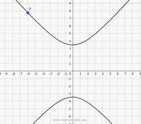
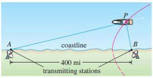
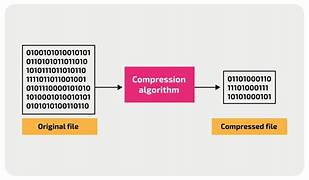
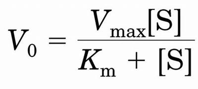

Scoperta/Origine: Le coniche, inclusa l'iperbole, furono studiate per la prima volta dagli antichi greci, con tracce nel lavoro di Euclide. Apollonio di Perga (262-190 a.C.) è considerato colui che ha trattato le coniche in modo compiuto, definendo l'iperbole come intersezione di un cono con un piano. La rappresentazione tramite equazione cartesiana si deve a René Descartes, che nel 1637 pubblicò la Géométrie, fondando la geometria analitica. Successivamente matematici come John Wallis, Isaac Newton, Guillaume de l'Hôpital e Leonhard Euler contribuirono a perfezionare l'analisi dell'iperbole e delle altre coniche.
Navigazione:
Prima del GPS, le navi e gli aerei usavano il sistema LORAN (Long Range Navigation). Si basa sulla differenza di tempo tra i segnali ricevuti da due stazioni fisse. Poiché l'iperbole è il luogo dei punti in cui la differenza delle distanze dai fuochi è costante, la posizione del ricevitore viene individuata sull'intersezione di diverse curve iperboliche.

Informatica: Algoritmi di compressione:
Alcuni metodi di compressione dati e algoritmi di crittografia utilizzano le proprietà delle curve iperboliche per gestire calcoli complessi in modo efficiente, proteggendo la sicurezza delle transazioni online.

Medicina - Farmacocinetica e Dosaggio:
Molte reazioni biochimiche nel corpo umano seguono l'equazione di Michaelis-Menten. Il grafico che mette in relazione la velocità di una reazione enzimatica con la concentrazione del substrato è un ramo di iperbole. Questo serve ai medici per capire qual è il dosaggio massimo di un farmaco oltre il quale il corpo non riesce più ad assorbirlo efficacemente (saturazione).
